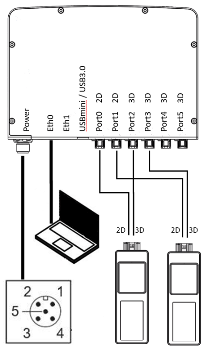

Hardware unboxing
If nobody tampered with your O3R package, you should have following hardware:
Camera head (two of them if you ordered the developer kit)

VPU (Video Processing Unit)

FPD cables to connect the head(s) to the VPU
You need a strong enough power source: 2.5A and 24V minimum.
First, connect the head(s) to the VPU; the only requirement is to connect pairs of same imager types together, for instance as shown below:
Connect power to the VPU - ATTENTION: PIN2 is power! PIN3 is ground
Connect the ethernet cable (not included in the package)
Wait until you see the ethernet LED flashing before pinging/connecting to the VPU.
That’s it about the hardware. Next step: software installation.